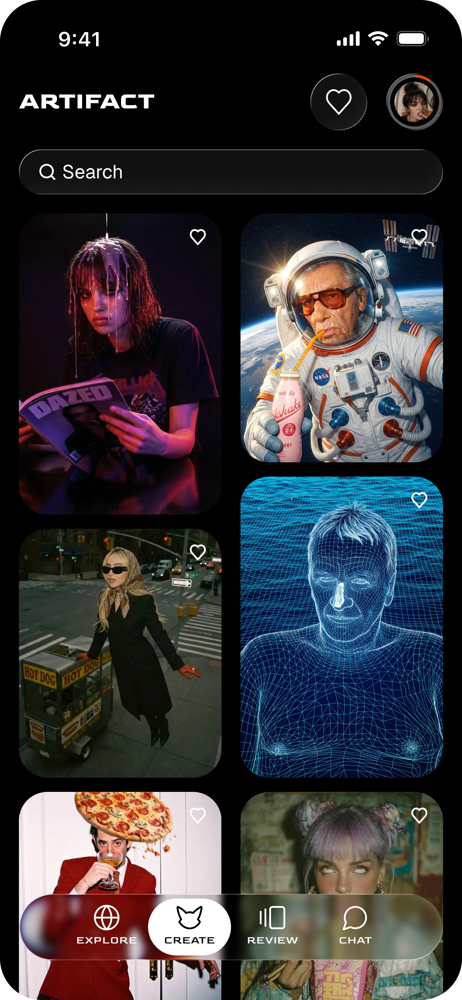
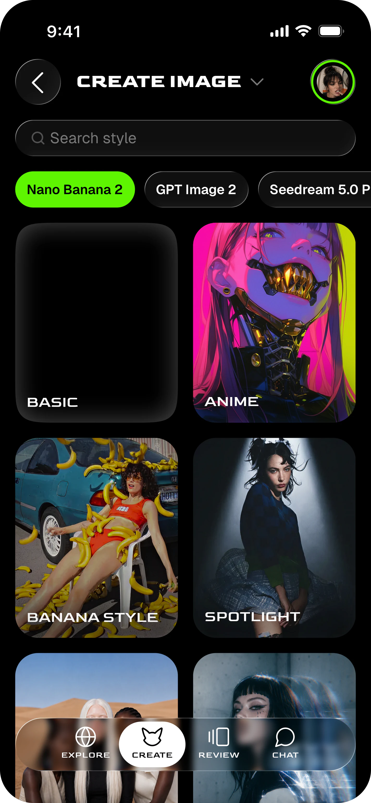
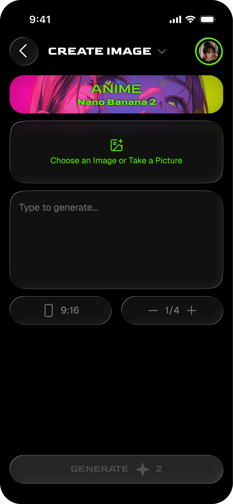
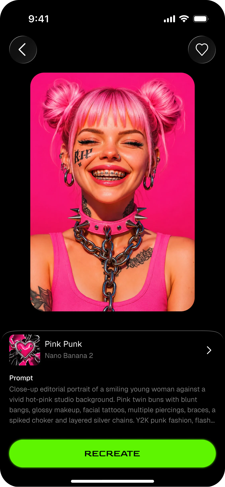
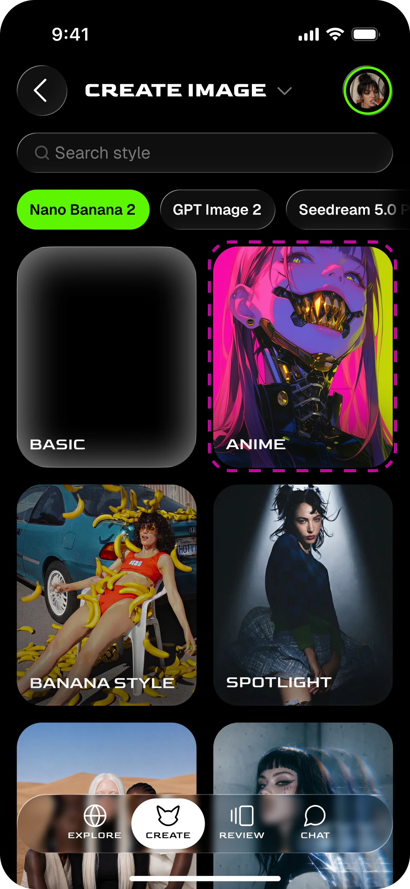
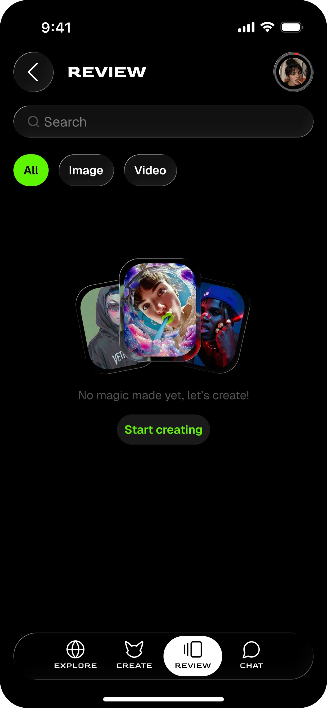
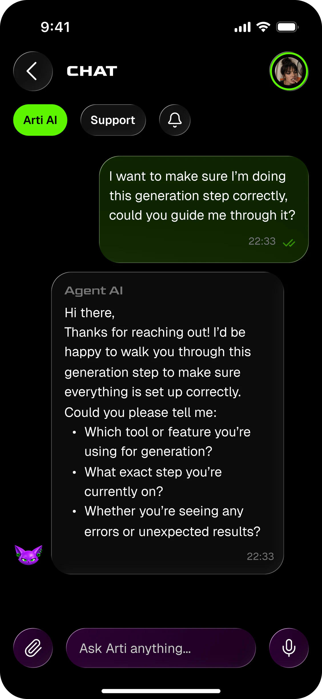
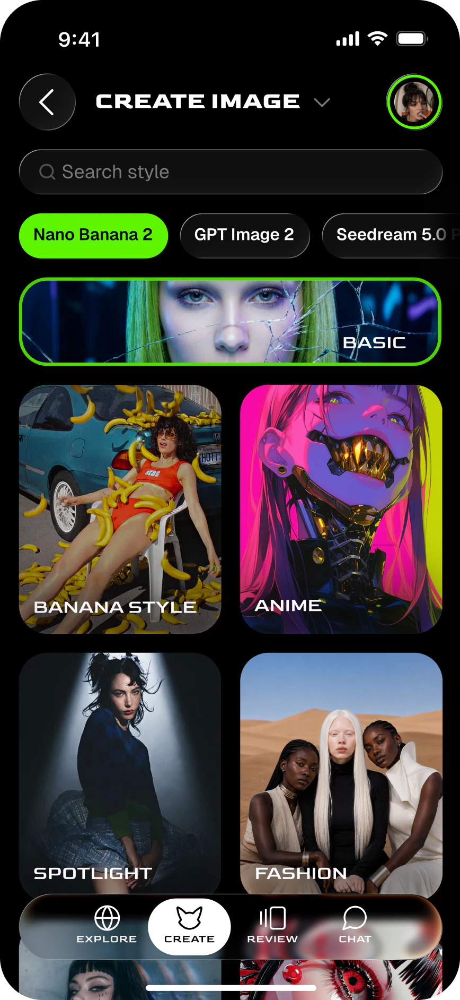
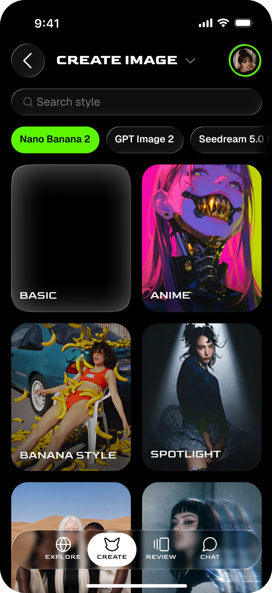
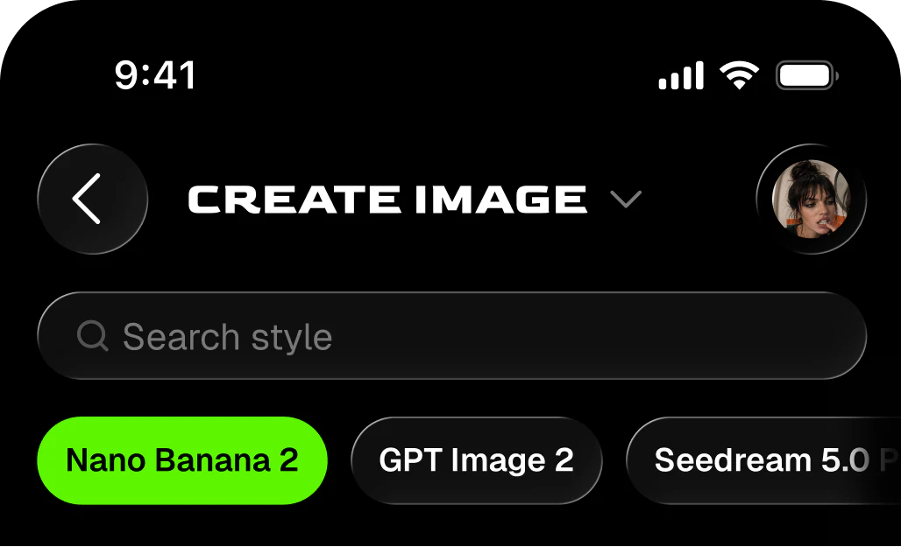

01 / Процесс
Пайплайн из 4-5 сервисов
Пайплайн
из 4-5 сервисов



ARTIFACT
ТРАБЛ
AI-платформы умеют почти всё, но на мобилке — нет
ПРОВЕРКА
Креаторы и SMM-специалисты
ИНСАЙТЫ
01 / Процесс
Пайплайн из 4-5 сервисов
Пайплайн
из 4-5 сервисов
02 / Контекст
Идеи для креатива появляются
в дороге между делами
Идеи появляются
в дороге между делами
03 / Результат
Реф, промт, генерация и правка не связаны в одном сценарии
Тулзы не связаны
в одном сервисе
Нужен короткий путь от идеи к результату
АРХИТЕКТУРА
EXPLORE
CARD DETAILS

CREATE

GENERATION SETUP
REVIEW

SAVED WORKS
CHAT
AI RESPONSE

ТЕСТИРОВАНИЕ
ЗАДАНИЕ
“Надо сгенерить картинку и превратить её в видос”
TEST 01
ДОЛЯ УЧАСТНИКОВ, УСПЕШНО ЗАВЕРШИВШИХ СЦЕНАРИЙУСПЕШНО ПРОШЛИ
ПОСЛЕ ПЕРВОЙ ИТЕРАЦИИ



TEST 02
ДОЛЯ УЧАСТНИКОВ, УСПЕШНО ЗАВЕРШИВШИХ СЦЕНАРИЙУСПЕШНО ПРОШЛИ
РАЗВИТИЕ